你未看见的事~
金渐成Drive 截图 PDFOCR待核对
原始截图优先 · OCR 仅辅助检索
原始 PDF 不公开，本页展示捕获页面的截图。 下方优先展示原始截图；自动识别文字默认收起，仅辅助检索与对照。OCR 由程序自动识别，尚未逐字核对，可能存在错字、漏字、漏行、顺序或断行错误。留言与作者回复仅限截图中可见的内容，不代表完整线上留言，也未据此推断留言总数。
OCR 识别提示（待核对）
- OCR 自动识别文字，尚未逐字校对；可能错字、漏字、漏行，数字、姓名、标点及断行也可能有误，请以截图为准。
- 这里只保留 PDF 已截到的正文、留言和作者回复；截图以外的留言不在此存档中。
- 未从截图推断留言总数或回复关系；手机界面文字也可能混入 OCR。
- 低置信标记仅为机器提示，并不表示未标记的文字已经准确。
识别工具：tesseract 5.5.0 · tesseract-ocr/tessdata_best chi_sim。识别器置信度仅用于提示核对，不是文字准确率。
第 1 页 · 原始截图
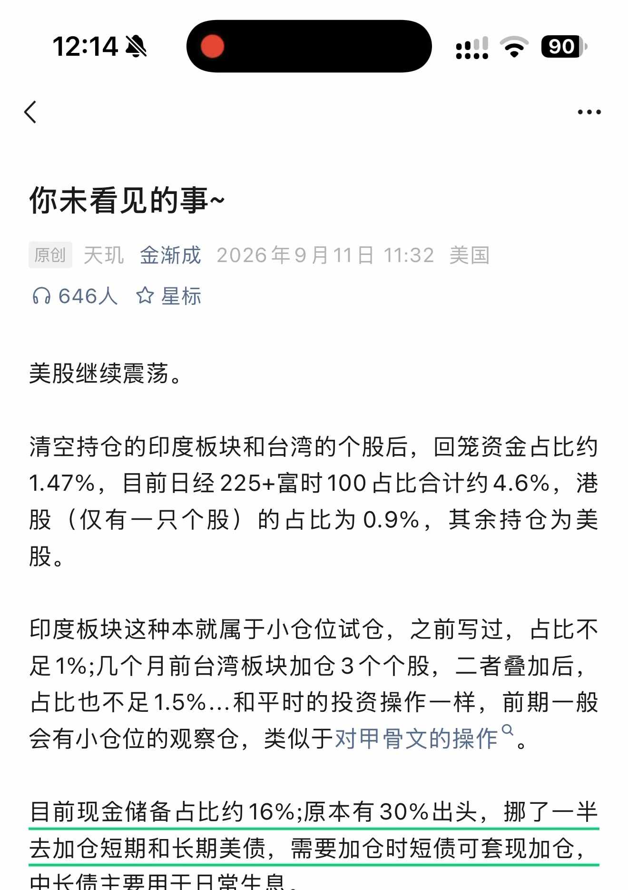
第 1 页原始捕获截图 · 单独打开／放大原图查看本页自动识别文字（OCR待核对） · 27 处低置信度提示
以下为未经逐字核对的自动识别结果，请以上方原图为准。
人》 :…=
你未看见的事 *
原创天现金渐成 2026 年 9 月 11 日 11:32 美国介 646 人安星标
美股继续震荡。
清空持仓的印度板块和台湾的个股后， 回笼资金占比约1.47%， 目前日经 225+ 富时 100 占比合计约 4.6%， 港股 ( 仅有一只个股 ) 的占比为 0.9%， 其余持仓为美股。
印度板块这种本就属于小仓位试仓， 之前写过， 占比不足 1%; 几个月前台湾板块加仓 3 个个股， 二者去加后，占比也不足 1.5%.… 和平时的投资操作一样， 前期一般会有小仓位的观察仓， 类似于对甲骨文的操作 ”。
目前现金储备占比约 16%; 原本有 30% 出头， 挪了一半去加仓短期和长期美俐， 需要加仓时短全可套现加仓，中长债主要用于日常生息。
识别器标记 27 处低置信度，请对照截图核对
这些是识别器的风险提示，并不等于已确认的错误。
- 人》 :…=
- 你未看见的事 *
- 原创天现金渐成 2026 年 9 月 11 日 11:32 美国
- 介 646 人安星标
- 清空持仓的印度板块和台湾的个股后， 回笼资金占比约
- 1.47%， 目前日经 225+ 富时 100 占比合计约 4.6%， 港
- 股 ( 仅有一只个股 ) 的占比为 0.9%， 其余持仓为美
- 足 1%; 几个月前台湾板块加仓 3 个个股， 二者去加后，
- 占比也不足 1.5%.… 和平时的投资操作一样， 前期一般
- 会有小仓位的观察仓， 类似于对甲骨文的操作 ”。
- 目前现金储备占比约 16%; 原本有 30% 出头， 挪了一半
- 去加仓短期和长期美俐， 需要加仓时短全可套现加仓，
第 2 页 · 原始截图
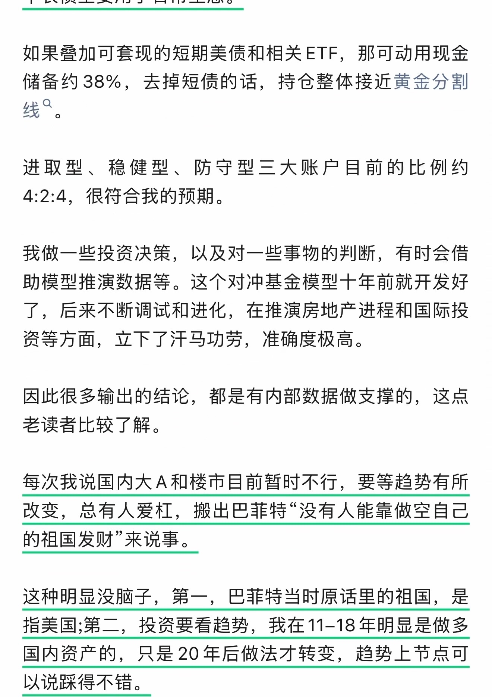
第 2 页原始捕获截图 · 单独打开／放大原图查看本页自动识别文字（OCR待核对） · 20 处低置信度提示
以下为未经逐字核对的自动识别结果，请以上方原图为准。
如果到加可套现的短期美便和相关 ETF， 那可动用现金储备约 38%， 去掉短癸的话， 持仓整体接近黄金分割线 "。
进取型、 稳健型、 防守型三大账户目前的比例约4:2:4， 很符合我的预期。
我做一些投资决策， 以及对一些事物的判断， 有时会借助模型推演数据等。 这个对冲基金模型十年前就开发好了， 后来不断调试和进化， 在推演房地产进程和国际投资等方面， 立下了汗马功劳， 准确度极高。
因此很多输出的结论， 都是有内部数据做支撑的， 这点老读者比较了解。
每次我说国内大 A 和楼市目前暂时不行， 要等趋势有所改变， 总有人爱枉， 搬出巴菲特 “没有人能靠做空自己的祖国发财来说事。
这种明显没脑子， 第一， 巴菲特当时原话里的祖国， 是指美国 ;第二， 投资要看趋势， 我在 11-18 年明显是做多国内资产的， 只是 20 年后做法才转变， 趋势上节点可以说踩得不错。
识别器标记 20 处低置信度，请对照截图核对
这些是识别器的风险提示，并不等于已确认的错误。
- 如果到加可套现的短期美便和相关 ETF， 那可动用现金
- 储备约 38%， 去掉短癸的话， 持仓整体接近黄金分割
- 线 "。
- 进取型、 稳健型、 防守型三大账户目前的比例约
- 4:2:4， 很符合我的预期。
- 我做一些投资决策， 以及对一些事物的判断， 有时会借
- 了， 后来不断调试和进化， 在推演房地产进程和国际投
- 改变， 总有人爱枉， 搬出巴菲特 “没有人能靠做空自己
- 这种明显没脑子， 第一， 巴菲特当时原话里的祖国， 是
- 指美国 ;第二， 投资要看趋势， 我在 11-18 年明显是做多
第 3 页 · 原始截图
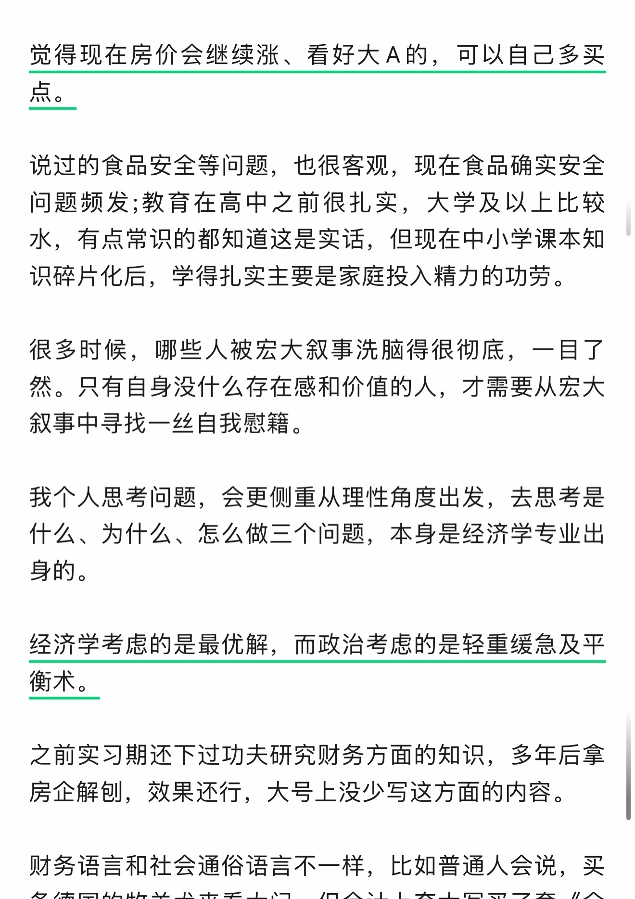
第 3 页原始捕获截图 · 单独打开／放大原图查看本页自动识别文字（OCR待核对） · 6 处低置信度提示
以下为未经逐字核对的自动识别结果，请以上方原图为准。
觉得现在房价会继续涨、 看好大 A 的， 可以自己多买点
说过的食品安全等问题， 也很客观， 现在食品确实安全问题频发 ;教育在高中之前很扎实， 大学及以上比较水， 有点常识的都知道这是实话， 但现在中小学课本知识碎片化后， 学得扎实主要是家庭投入精力的功劳。
很多时候， 哪些人被宏大叙事洗脑得很彻底， 一目了然。 只有自身没什么存在感和价值的人， 才需要从宏大叙事中寻找一丝自我感籍。
我个人思考问题， 会更侧重从理性角度出发， 去思考是什么、 为什么、 怎么做三个问题， 本身是经济学专业出身的。
经济学考虑的是最优解， 而政治考虑的是轻重缓急及平衡术。
之前实习期还下过功夫研究财务方面的知识， 多年后拿房企解刨， 效果还行， 大号上没少写这方面的内容。
财务语言和社会通俗语言不一样， 比如普通人会说， 买
识别器标记 6 处低置信度，请对照截图核对
这些是识别器的风险提示，并不等于已确认的错误。
- 觉得现在房价会继续涨、 看好大 A 的， 可以自己多买
- 叙事中寻找一丝自我感籍。
- 房企解刨， 效果还行， 大号上没少写这方面的内容。
- 财务语言和社会通俗语言不一样， 比如普通人会说， 买
第 4 页 · 原始截图
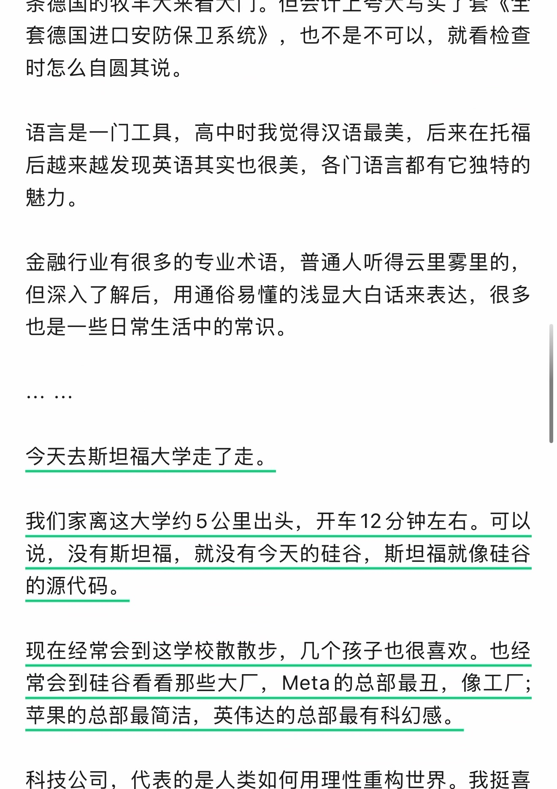
第 4 页原始捕获截图 · 单独打开／放大原图查看本页自动识别文字（OCR待核对） · 16 处低置信度提示
以下为未经逐字核对的自动识别结果，请以上方原图为准。
条德国的牧羊大来看大门。 但会计上夸大写买了套 《全套德国进口安防保卫系统》， 也不是不可以， 就看检查时怎么自圆其说。
语言是一门工具， 高中时我觉得汉语最美， 后来在托福后越来越发现英语其实也很美， 各门语言都有它独特的魅力。
金融行业有很多的专业术语， 普通人听得云里圾里的，但深入了解后， 用通俗易懂的浅显大白话来表达， 很多也是一些日常生活中的常识。
今天去斯坦福大学走了走。
我们家离这大学约 5 公里出头， 开车 12 分钟左右。 可以说， 没有斯坦福， 就没有今天的硅谷， 斯坦福就像硅谷的源代码。
现在经常会到这学校散散步， 几个孩子也很喜欢。 也经常会到硅谷看看那些大三，Meta 的总部最丑， 像工厂 ;苹果的总部最简洁， 英伟达的总部最有科幻感。
科技公司， 代表的是人类如何用理性重构世界。 我挺喜
识别器标记 16 处低置信度，请对照截图核对
这些是识别器的风险提示，并不等于已确认的错误。
- 条德国的牧羊大来看大门。 但会计上夸大写买了套 《全
- 套德国进口安防保卫系统》， 也不是不可以， 就看检查
- 语言是一门工具， 高中时我觉得汉语最美， 后来在托福
- 金融行业有很多的专业术语， 普通人听得云里圾里的，
- 也是一些日常生活中的常识。
- 我们家离这大学约 5 公里出头， 开车 12 分钟左右。 可以
- 的源代码。
- 现在经常会到这学校散散步， 几个孩子也很喜欢。 也经
- 常会到硅谷看看那些大三，Meta 的总部最丑， 像工厂 ;
- 科技公司， 代表的是人类如何用理性重构世界。 我挺喜
第 5 页 · 原始截图
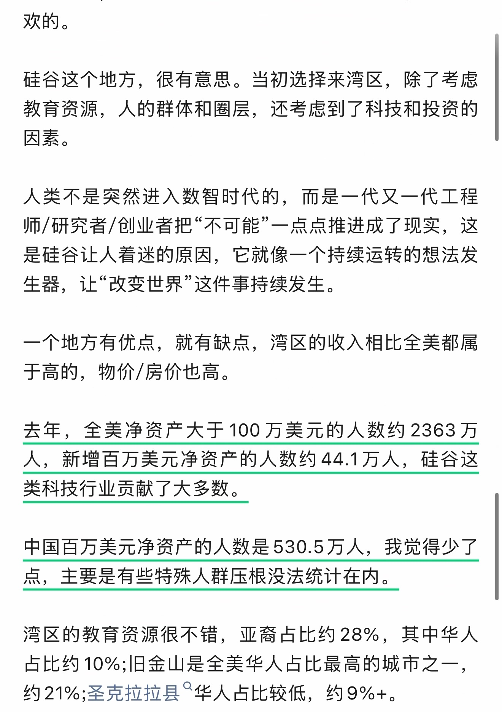
第 5 页原始捕获截图 · 单独打开／放大原图查看本页自动识别文字（OCR待核对） · 19 处低置信度提示
以下为未经逐字核对的自动识别结果，请以上方原图为准。
欢的。
硅谷这个地方， 很有意思。 当初选择来湾区， 除了考虑教育资源， 人的群体和圈层， 还考虑到了科技和投资的因素。
人类不是突然进入数智时代的， 而是一代又一代工程
是硅谷让人着迷的原因， 它就像一个持续运转的想法发生器， 让 “改变世界这件事持续发生。
一个地方有优点， 就有缺点， 湾区的收入相比全美都属于高的， 物价 /房价也高。
去年， 全美净资产大于 100 万美元的人数约 2363 万人， 新增百万美元净资产的人数约 44.1 万人人， 硅谷这类科技行业贡献了大多数。
中国百万美元净资产的人数是 530.5 万人， 我觉得少了点， 主要是有些特殊人群压根没法统计在内。
湾区的教育资源很不错， 亚裔占比约 28%， 其中华人占比约 10%; 旧金山是全美华人占比最高的城市乙一，约 21%6; 圣克拉拉县 “华人占比较低， 约 9%+。
识别器标记 19 处低置信度，请对照截图核对
这些是识别器的风险提示，并不等于已确认的错误。
- 硅谷这个地方， 很有意思。 当初选择来湾区， 除了考虑
- 教育资源， 人的群体和圈层， 还考虑到了科技和投资的
- 是硅谷让人着迷的原因， 它就像一个持续运转的想法发
- 生器， 让 “改变世界这件事持续发生。
- 去年， 全美净资产大于 100 万美元的人数约 2363 万
- 人， 新增百万美元净资产的人数约 44.1 万人人， 硅谷这
- 中国百万美元净资产的人数是 530.5 万人， 我觉得少了
- 点， 主要是有些特殊人群压根没法统计在内。
- 湾区的教育资源很不错， 亚裔占比约 28%， 其中华人
- 占比约 10%; 旧金山是全美华人占比最高的城市乙一，
- 约 21%6; 圣克拉拉县 “华人占比较低， 约 9%+。
第 6 页 · 原始截图
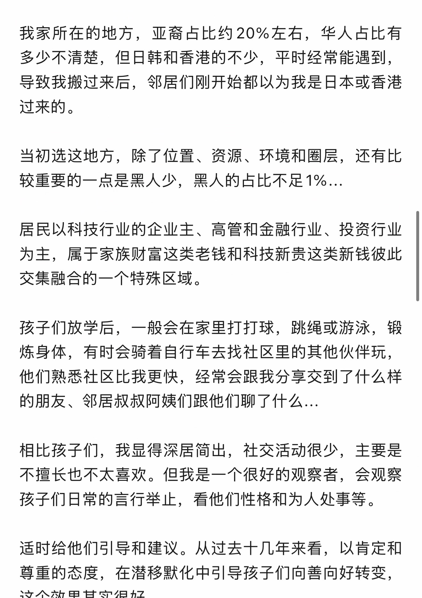
第 6 页原始捕获截图 · 单独打开／放大原图查看本页自动识别文字（OCR待核对） · 18 处低置信度提示
以下为未经逐字核对的自动识别结果，请以上方原图为准。
我家所在的地方， 亚裔占比约 20% 左右， 华人占比有多少不清楚， 但日韩和香港的不少， 平时经常能遇到，导致我搬过来后， 邻居们刚开始都以为我是日本或香港过来的。
当初选这地方， 除了位置、 资源、 环境和圈层， 还有比较重要的一点是黑人少， 黑人的占比不足 1%6.…
居民以科技行业的企业主、 高管和金融行业、 投资行业为主， 属于家族财富这类老钱和科技新贵这类新钱彼此交集融合的一个特殊区域。
孩子们放学后， 一般会在家里打打球， 跳绳或游泳， 锻炼身体， 有时会骑着自行车去找社区里的其他伙伴玩，他们熟悉社区比我更快， 经常会跟我分享交到了什么样的朋友、 邻居叔叔阿姨们跟他们聊了什么 …
相比孩子们， 我显得深居简出， 社交活动很少， 主要是不擅长也不太喜欢。 但我是一个很好的观察者， 会观察孩子们日常的言行举止， 看他们性格和为人处事等。
适时给他们引导和建议。 从过去十几年来看， 以肯定和尊重的态度， 在潜移默化中引导孩子们向善向好转变，这个效果其实很好。
识别器标记 18 处低置信度，请对照截图核对
这些是识别器的风险提示，并不等于已确认的错误。
- 我家所在的地方， 亚裔占比约 20% 左右， 华人占比有
- 多少不清楚， 但日韩和香港的不少， 平时经常能遇到，
- 当初选这地方， 除了位置、 资源、 环境和圈层， 还有比
- 较重要的一点是黑人少， 黑人的占比不足 1%6.…
- 为主， 属于家族财富这类老钱和科技新贵这类新钱彼此
- 交集融合的一个特殊区域。
- 孩子们放学后， 一般会在家里打打球， 跳绳或游泳， 锻
- 他们熟悉社区比我更快， 经常会跟我分享交到了什么样
- 的朋友、 邻居叔叔阿姨们跟他们聊了什么 …
- 不擅长也不太喜欢。 但我是一个很好的观察者， 会观察
- 尊重的态度， 在潜移默化中引导孩子们向善向好转变，
第 7 页 · 原始截图
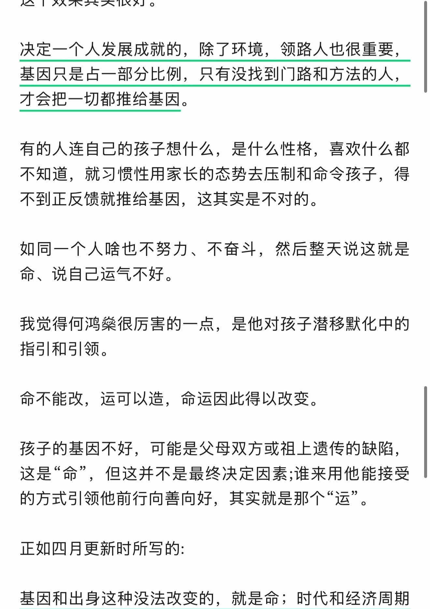
第 7 页原始捕获截图 · 单独打开／放大原图查看本页自动识别文字（OCR待核对） · 14 处低置信度提示
以下为未经逐字核对的自动识别结果，请以上方原图为准。
决定一个人发展成就的， 除了环境， 领路人也很重要，基因只是占一部分比例， 只有没找到门路和方法的人，才会把一切都推给基因。
有的人连自己的孩子想什么， 是什么性格， 喜欢什么都不知道， 就习惯性用家长的态势去压制和命令孩子， 得不到正反馈就推给基因， 这其实是不对的。
如同一个人啥也不努力、 不奋斗， 然后整天说这就是命、 说自己运气不好。
我觉得何鸿乐很厉害的一点， 是他对孩子潜移默化中的指引和引领。
命不能改， 运可以造， 命运因此得以改变。孩子的基因不好， 可能是父母双方或祖上遗传的缺陷，这是 ” 命， 但这并不是最终决定因素 ; 谁来用他能接受的方式引领他前行向善向好， 其实就是那个运。正如四月更新时所写的 :
基因和出身这种没法改变的， 就是命， 时代和经济周期
识别器标记 14 处低置信度，请对照截图核对
这些是识别器的风险提示，并不等于已确认的错误。
- 有的人连自己的孩子想什么， 是什么性格， 喜欢什么都
- 如同一个人啥也不努力、 不奋斗， 然后整天说这就是
- 我觉得何鸿乐很厉害的一点， 是他对孩子潜移默化中的
- 孩子的基因不好， 可能是父母双方或祖上遗传的缺陷，
- 这是 ” 命， 但这并不是最终决定因素 ; 谁来用他能接受
- 的方式引领他前行向善向好， 其实就是那个运。
- 基因和出身这种没法改变的， 就是命， 时代和经济周期
第 8 页 · 原始截图
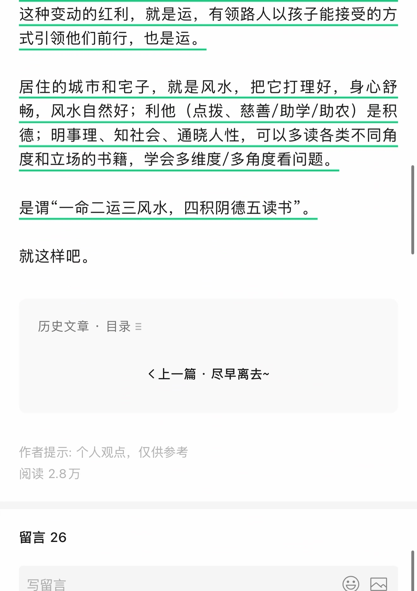
第 8 页原始捕获截图 · 单独打开／放大原图查看本页自动识别文字（OCR待核对） · 15 处低置信度提示
以下为未经逐字核对的自动识别结果，请以上方原图为准。
这种变动的红利， 就是运， 有领路人以孩子能接受的方式引领他们前行， 也是运。
居住的城市和宅子， 就是风水， 把它打理好， 身心舒畅， 风水自然好 ; 利他 《点氢、 慈善 / 助学 / 助农 ) 是积德 ; 明事理、 知社会、 通晓人性， 可以多读各类不同角度和立场的书籍， 学会多维度 /多角度看问题。
是谓一命二运三风水， 四积阴德五读书。
就这样吧。
历史文章， 目录 =
《上一篇尽早离去 ~
作者提示 : 个人观点， 仅供参考阅读 2.8 万
留言 26写留言 CR
识别器标记 15 处低置信度，请对照截图核对
这些是识别器的风险提示，并不等于已确认的错误。
- 这种变动的红利， 就是运， 有领路人以孩子能接受的方
- 式引领他们前行， 也是运。
- 居住的城市和宅子， 就是风水， 把它打理好， 身心舒
- 畅， 风水自然好 ; 利他 《点氢、 慈善 / 助学 / 助农 ) 是积
- 是谓一命二运三风水， 四积阴德五读书。
- 历史文章， 目录 =
- 《上一篇尽早离去 ~
- 写留言 CR
第 9 页 · 原始截图
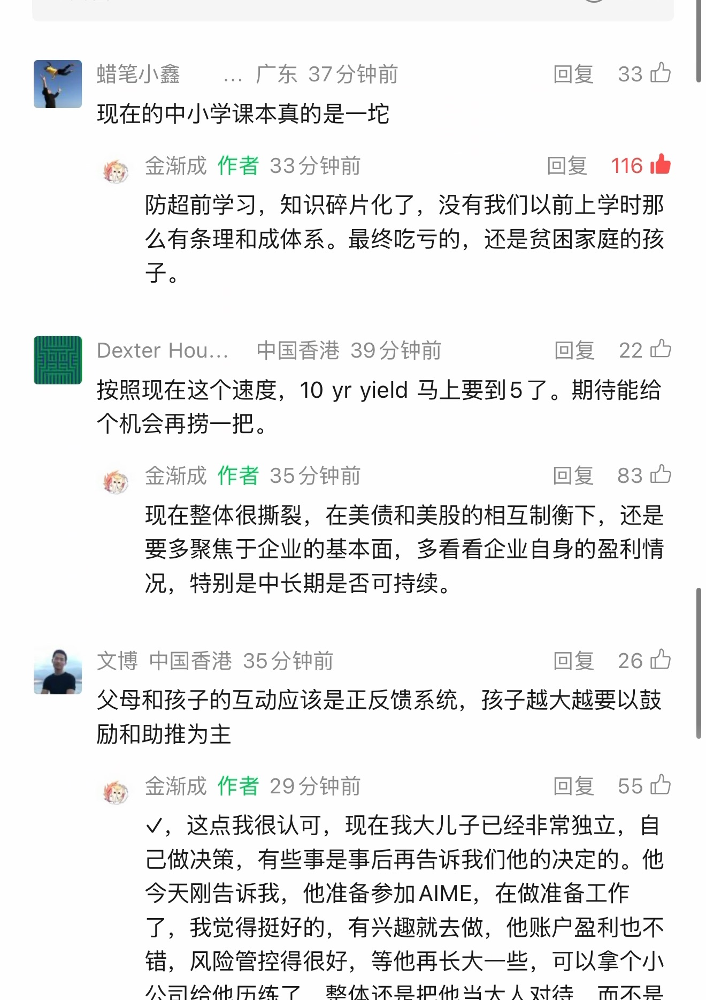
第 9 页原始捕获截图 · 单独打开／放大原图查看本页自动识别文字（OCR待核对） · 46 处低置信度提示
以下为未经逐字核对的自动识别结果，请以上方原图为准。
国蜡笔小读 .广东 37 分钟前回复 ”33 办现在的中小学课本真的是一过敬金渐成作者 33 分钟前回复 116 由
防超前学习， 知识碎片化了， 没有我们以前上学时那么有条理和成体系。 最终吃亏的， 还是贫困家庭的孩子。
图 Dexter Hou.. 中国香港 39 分钟前回复 ”22 喘
按照现在这个速度，10 yr yield 马上要到 5 了。 期待能给个机会再捞一把。
敬人金渐成作者 35 分钟前回复 ”83 只现在整体很撕裂， 在美债和美股的相互制衡下， 还是要多聚焦于企业的基本面， 多看看企业自身的盈利情况， 特别是中长期是否可持续。
而文博中国香港 35 分钟前回复 ”26 让
父母和孩子的互动应该是正反馈系统， 孩子越大越要以鼓励和助推为主
烙， 金渐成作者 29 分钟前回复 ”55 办
V， 这点我很认可， 现在我大儿子已经非常独立， 自己做决策， 有些事是事后再告诉我们他的决定的。 他今天刚告诉我， 他准备参加 AlIME， 在做准备工作了， 我觉得挺好的， 有兴趣就去做， 他账户僵利也不错， 风险管控得很好， 等他再长大一些， 可以拿个小公司给他历练了， 整体还是把他当大人对待， 而不是
识别器标记 46 处低置信度，请对照截图核对
这些是识别器的风险提示，并不等于已确认的错误。
- 国蜡笔小读 .广东 37 分钟前回复 ”33 办
- 现在的中小学课本真的是一过
- 敬金渐成作者 33 分钟前回复 116 由
- 防超前学习， 知识碎片化了， 没有我们以前上学时那
- 图 Dexter Hou.. 中国香港 39 分钟前回复 ”22 喘
- 按照现在这个速度，10 yr yield 马上要到 5 了。 期待能给
- 敬人金渐成作者 35 分钟前回复 ”83 只
- 现在整体很撕裂， 在美债和美股的相互制衡下， 还是
- 而文博中国香港 35 分钟前回复 ”26 让
- 父母和孩子的互动应该是正反馈系统， 孩子越大越要以鼓
- 烙， 金渐成作者 29 分钟前回复 ”55 办
- V， 这点我很认可， 现在我大儿子已经非常独立， 自
- 己做决策， 有些事是事后再告诉我们他的决定的。 他
- 了， 我觉得挺好的， 有兴趣就去做， 他账户僵利也不
- 错， 风险管控得很好， 等他再长大一些， 可以拿个小
第 10 页 · 原始截图
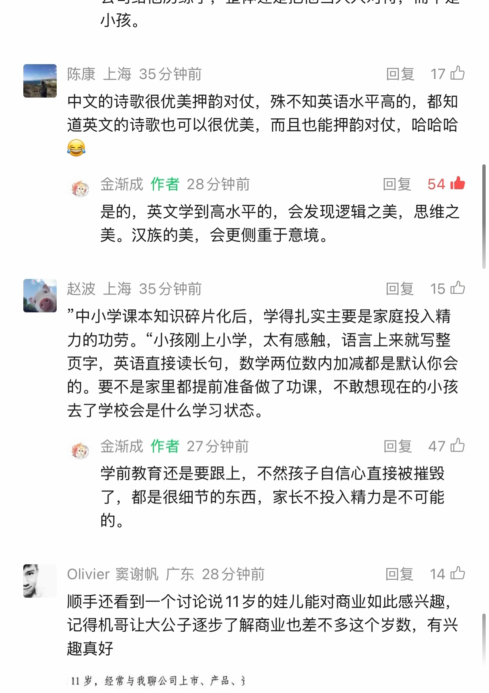
第 10 页原始捕获截图 · 单独打开／放大原图查看本页自动识别文字（OCR待核对） · 34 处低置信度提示
以下为未经逐字核对的自动识别结果，请以上方原图为准。
小孩。
| 陈康上海 35 分钟前回复 17 让
保必
中文的诗歌很优美押韵对仗， 殊不知英语水平高的， 都知道英文的诗歌也可以很优美， 而且也能押竟对仗， 哈哈哈化
等金渐成作者 28 分钟前回复久生
是的， 英文学到高水平的， 会发现轴辑之美， 思维之美。 汉族的美， 会更侧重于意境。
赵波上海 35 分钟前回复二已“中小学课本知识碎片化后， 学得扎实主要是家庭投入精力的功劳。 小孩刚上小学， 太有感触， 语言上来就写整页字， 英语直接读长句， 数学两位数内加减都是默认你会的。 要不是家里都提前准备做了功课， 不敢想现在的小孩去了学校会是什么学习状态。
准人金渐成作者 27 分钟前回复 47 四
学前教育还是要跟上， 不然孩子自信心直接被摧毁了， 都是很细节的东西， 家长不投入精力是不可能的。
Olivier 赛谢帆广东 28 分钟前回复六顺手还看到一个讨论说 11 岁的娃儿能对商业如此感兴趣，
记得机哥让大公子逐步了解商业也差不多这个岁数， 有兴趣真好
11 岁， 经常与我聊公司上市、 产品、?
识别器标记 34 处低置信度，请对照截图核对
这些是识别器的风险提示，并不等于已确认的错误。
- | 陈康上海 35 分钟前回复 17 让
- 保必
- 道英文的诗歌也可以很优美， 而且也能押竟对仗， 哈哈哈
- 化
- 等金渐成作者 28 分钟前回复久生
- 是的， 英文学到高水平的， 会发现轴辑之美， 思维之
- 赵波上海 35 分钟前回复二已
- 页字， 英语直接读长句， 数学两位数内加减都是默认你会
- 准人金渐成作者 27 分钟前回复 47 四
- Olivier 赛谢帆广东 28 分钟前回复六
- 顺手还看到一个讨论说 11 岁的娃儿能对商业如此感兴趣，
- 11 岁， 经常与我聊公司上市、 产品、?
第 11 页 · 原始截图
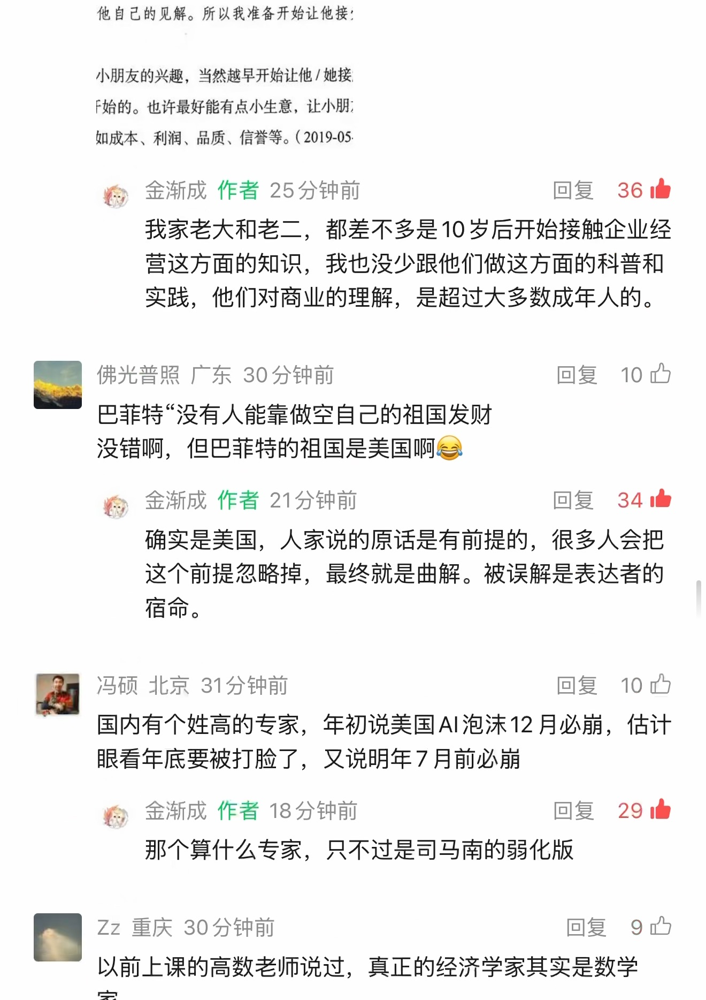
第 11 页原始捕获截图 · 单独打开／放大原图查看本页自动识别文字（OCR待核对） · 39 处低置信度提示
以下为未经逐字核对的自动识别结果，请以上方原图为准。
他自己的见解。 所以我准备开始让他接 !
小朋友的兴趣， 当然越早开始让他 / 她接F 始的。 也许最好能有点小生意， 让小朋 ;如成本、 利润、 品质、 信誉等。( 2019-05，
准， 金渐成作者 25 分钟前回复 36 由我家老大和老二， 都差不多是 10 岁后开始接触企业经营这方面的知识， 我也没少跟他们做这方面的科普和实践， 他们对商业的理解， 是超过大多数成年人的。
佛光普照广东 30 分钟前回复 10 办巴菲特没有人能靠做空自己的祖国发财
没错啊， 但巴菲特的祖国是美国啊优
枚金渐成作者 21 分钟前回复 34 曙
确实是美国， 人家说的原话是有前提的， 很多人会把这个前提忽略掉， 最终就是曲解。 被误解是表达者的宿命。
冯硕北京 31 分钟前回复 “10 办
国内有个姓高的专家， 年初说美国 Al 泡沫 12 月必骨， 估计
眼看年底要被打脸了， 又说明年 7 月前必骨
枚人金渐成作者 18 分钟前回复 ”29 由那个算什么专家， 只不过是司马南的弱化版
Zz 重庆 30 分钟前回复 ”9 吃以前上课的高数老师说过， 真正的经济学家其实是数学
识别器标记 39 处低置信度，请对照截图核对
这些是识别器的风险提示，并不等于已确认的错误。
- 他自己的见解。 所以我准备开始让他接 !
- 小朋友的兴趣， 当然越早开始让他 / 她接
- F 始的。 也许最好能有点小生意， 让小朋 ;
- 如成本、 利润、 品质、 信誉等。( 2019-05，
- 准， 金渐成作者 25 分钟前回复 36 由
- 佛光普照广东 30 分钟前回复 10 办
- 巴菲特没有人能靠做空自己的祖国发财
- 没错啊， 但巴菲特的祖国是美国啊优
- 枚金渐成作者 21 分钟前回复 34 曙
- 冯硕北京 31 分钟前回复 “10 办
- 国内有个姓高的专家， 年初说美国 Al 泡沫 12 月必骨， 估计
- 眼看年底要被打脸了， 又说明年 7 月前必骨
- 枚人金渐成作者 18 分钟前回复 ”29 由
- 那个算什么专家， 只不过是司马南的弱化版
- Zz 重庆 30 分钟前回复 ”9 吃
- 以前上课的高数老师说过， 真正的经济学家其实是数学
第 12 页 · 原始截图
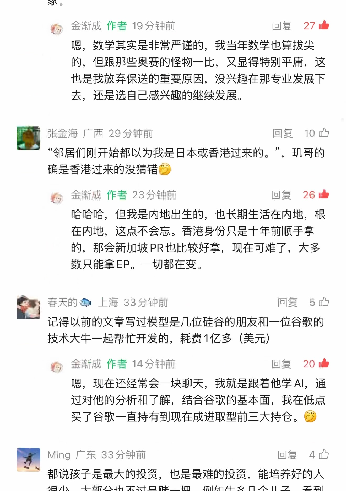
第 12 页原始捕获截图 · 单独打开／放大原图查看本页自动识别文字（OCR待核对） · 45 处低置信度提示
以下为未经逐字核对的自动识别结果，请以上方原图为准。
家。
稚人金渐成作者 19 分钟前回复 27 由咽， 数学其实是非常严谨的， 我当年数学也算拔尖的， 但跟那些奥赛的怪物一比， 又显得特别平庸， 这也是我放弃保送的重要原因， 没兴趣在那专业发展下去， 还是选自己感兴趣的继续发展。
围张金海广西 29 分钟前回复 10 中“邻居们刚开始都以为我是日本或香港过来的。”， 现哥的确是香港过来的没猜错参多金渐成作者 23 分钟前回复 26 由
哈哈哈， 但我是内地出生的， 也长期生活在内地， 根在内地， 这点不会忘。 香港身份只是十年前顺手拿的， 那会新加坡 PR 也比较好拿， 现在可难了， 大多数只能拿 EP。 一切都在变。
朱春天的全上海 33 分钟前回复 5 吃记得以前的文章写过模型是几位硅谷的朋友和一位谷歌的技术大牛一起帮忙开发的， 耗费 1 亿多 (美元 )
和从， 金渐成作者 14 分钟前回复 20 中咽， 现在还经常会一块聊天， 我就是跟着他学 Al， 通过对他的分析和了解， 结合谷歌的基本面， 我在低点买了谷歌一直持有到现在成进取型前三大持仓。 例
| Ming 广东 33 分钟前回轴 《已
都说孩子是最大的投资， 也是最难的投资， 能培养好的人
识别器标记 45 处低置信度，请对照截图核对
这些是识别器的风险提示，并不等于已确认的错误。
- 稚人金渐成作者 19 分钟前回复 27 由
- 咽， 数学其实是非常严谨的， 我当年数学也算拔尖
- 的， 但跟那些奥赛的怪物一比， 又显得特别平庸， 这
- 围张金海广西 29 分钟前回复 10 中
- “邻居们刚开始都以为我是日本或香港过来的。”， 现哥的
- 确是香港过来的没猜错参
- 多金渐成作者 23 分钟前回复 26 由
- 哈哈哈， 但我是内地出生的， 也长期生活在内地， 根
- 在内地， 这点不会忘。 香港身份只是十年前顺手拿
- 朱春天的全上海 33 分钟前回复 5 吃
- 记得以前的文章写过模型是几位硅谷的朋友和一位谷歌的
- 技术大牛一起帮忙开发的， 耗费 1 亿多 (美元 )
- 和从， 金渐成作者 14 分钟前回复 20 中
- 咽， 现在还经常会一块聊天， 我就是跟着他学 Al， 通
- 买了谷歌一直持有到现在成进取型前三大持仓。 例
- | Ming 广东 33 分钟前回轴 《已
第 13 页 · 原始截图
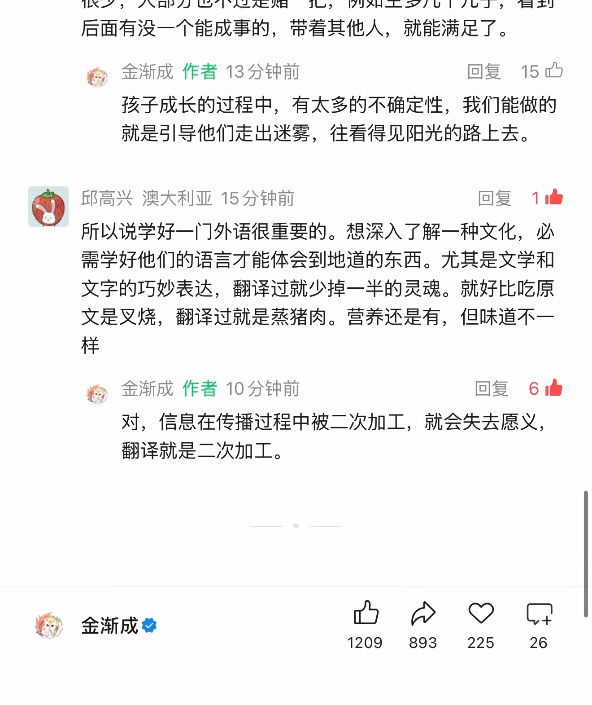
第 13 页原始捕获截图 · 单独打开／放大原图查看本页自动识别文字（OCR待核对） · 35 处低置信度提示
以下为未经逐字核对的自动识别结果，请以上方原图为准。
很少， 大部分也不过是赌一把， 例如生多几个儿子， 看到后面有没一个能成事的， 带着其他人， 就能满足了。
敬， 金渐成作者 13 分钟前回复 15 四
孩子成长的过程中， 有太多的不确定性， 我们能做的就是引导他们走出迷圾， 往看得见阳光的路上去。
多邱高兴澳大利亚 15 分钟前回复 1 中所以说学好一门外语很重要的。 想深入了解一种文化， 必需学好他们的语言才能体会到地道的东西。 尤其是文学和文字的巧妙表达， 翻译过就少掉一半的灵魂。 就好比吃原文是叉烧， 翻译过就是蒸猪肉。 营养还是有， 但味道不一样
鸭， 金渐成作者 10 分钟前回复 6 由对， 信息在传播过程中被二次加工， 就会失去愿义，翻译就是二次加工。
灼， 金渐成必四必局 2
识别器标记 35 处低置信度，请对照截图核对
这些是识别器的风险提示，并不等于已确认的错误。
- 很少， 大部分也不过是赌一把， 例如生多几个儿子， 看到
- 敬， 金渐成作者 13 分钟前回复 15 四
- 就是引导他们走出迷圾， 往看得见阳光的路上去。
- 多邱高兴澳大利亚 15 分钟前回复 1 中
- 所以说学好一门外语很重要的。 想深入了解一种文化， 必
- 文字的巧妙表达， 翻译过就少掉一半的灵魂。 就好比吃原
- 文是叉烧， 翻译过就是蒸猪肉。 营养还是有， 但味道不一
- 样
- 鸭， 金渐成作者 10 分钟前回复 6 由
- 灼， 金渐成必四必局 2
按日期浏览全部来源（同日按条目标识排序）
回到页首 ↑